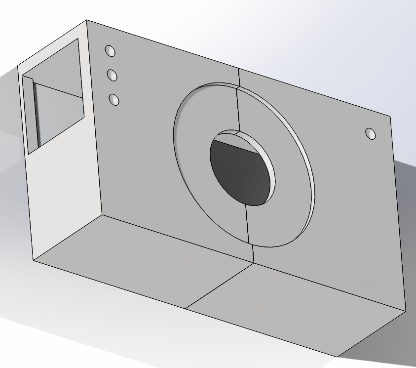
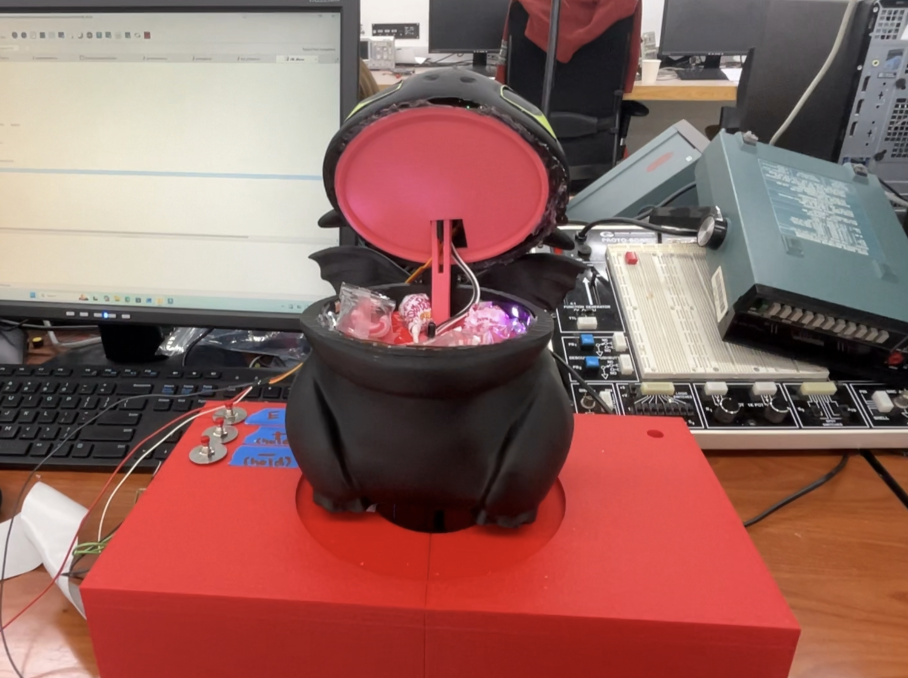
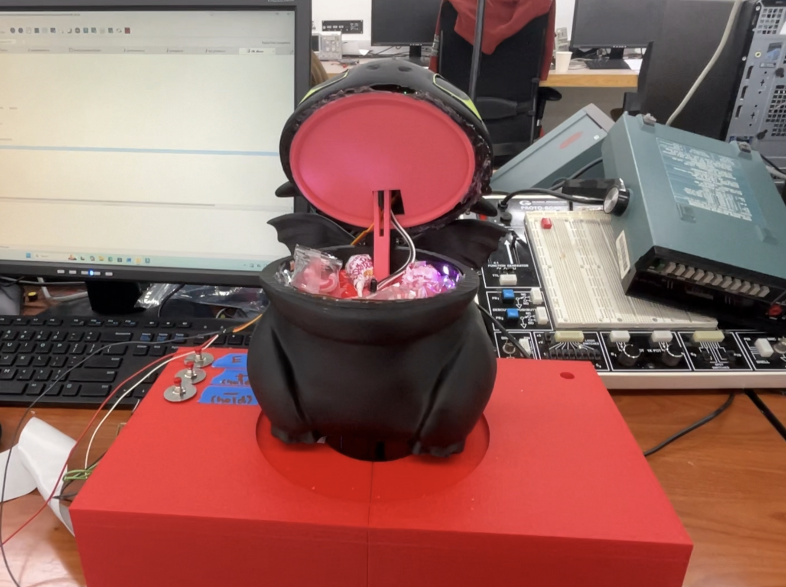

Mechanical CAD and Designs
All CAD files were printed on a Bambu Lab Design 3D printer. This greatly reduced the cost of the mechanical portion. The project will be significantly more expensive without access to a 3D printer and different colored filament. The 3D print can be painted but due to its smooth surface, the print will require sanding to hold paint.
Dragon Body
We sourced the Toothless CAD from a Toothless popcorn bucket online that provided the STL files (Figure 1). Because these files were sourced from the internet, the files did require scaling to fit the 3D printer. We had technical difficulties with the STL file as it downloaded extremely large so we scaled down to about 10% of the original size. However, if recreating this project, scale to your desired size.

Dragon Head
In order to detect the Capacitive Touch Sensor through the PLA, the inside of the nose was cut out using needle nose pliers, a soldering iron (not reccommended), sand paper, and pure will (Figure 2). The Capacitive Touch Sensor was then secured to the inside using hot glue and super glue and frequently tested to be sure it could be detected.

Since it was only printed with black PLA, the eyes were painted on with a green acrylic paint pen.
Dragon Body
In order to let the wires pass into the dragon stand box underneath, the body was mechanically modified by drilling into the bottom with a hole saw set (Figure 3).

Jaw Mechanism
In order to open the jaw, we planned for the servo to be held in the head and a lever arm to push against the bottom jaw such that the head opens and closes.
We designed all of the parts based on caliper measurements that we took of the Dragon’s printed body. The lever arm was originally printed to short where the IR proximity sensor would still trigger in it most open position. We ended up increasing the threshold for detection on the software end as well as modifying the mechanical part to be longer. The Bottom Jaw was also modified to contain two cylindrical extensions that extend down to the bottom of the dragon’s body to additionally support it as we were worried about the push back force from the servo motor. The Top Jaw was also modified after discovereding that one corner of the part holding the motor was hitting the inside of the dragon’s head and making it hard to line up nicely.
Bottom Jaw (IR Sensor Holder)
Top Jaw (Servo Holder)

Lever Arm
Dragon Stand


The bottom of the dragon and top of the dragon stand also had pieces of velcro attaching the two parts together to make sure it didn’t slide around during demos and break any of the more fragile electrical connections.
Although a very fun part of the project, the mechanical part was unfortuantely what broke on us for demo day. As a user tried to trigger the Capacitive Touch Sensor they pushed down on the head too hard while the Servo Motor was trying to move which meant the hinge connecting the dragon head to the body broke off. We’d like to thank hot glue and elastic hairbands that allowed us to make a quick recovery.
 
